4 婆罗摩笈多定理
婆罗摩笈多（Brahmagupta，约598—660）是古印度卓越的天文学家和数学家，生于乌贾因（当时属于乌苌国，是研究天文学的中心）。婆罗摩笈多在30岁左右，编著了《婆罗摩修正体系》（Brahma-sphuatasiddhlnta，628年）一书。该书用此名，是因为他修改和引用了印度最古老的天文学著作《婆罗摩体系》（Brāhmasiddhlnta）的内容。《婆罗摩修正体系》分为24章，其中《算术讲义》（Ganitld'hlya）和《不定方程讲义》（Kutakhldyaka）两章是专论数学的，前者研究三角形、四边形、零和负数的算术运算规则、给出二次方程的求根公式；后者研究一阶和二阶不定方程，给出了方程ax＋by＝c（a、b、c是整数）的第一个一般解。他还得到婆罗摩笈多-斐波那契恒等式：
（a2＋b2）（c2＋d2）＝（ac－bd）2＋（ad＋bc）2＝（ac＋bd）2＋（ad－bc）2
这个恒等式说明如果有两个整数都能表示为两个平方数的和，则这两个整数的积也可以表示为两个平方数的和。
《婆罗摩修正体系》的其他各章是关于天文学研究的，也涉及许多数学知识，他应用数学预测日月食。
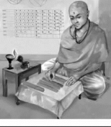
婆罗摩笈多
婆罗摩笈多的算术工作
作为数学家的他主要研究的问题是：根据所给的边和外接圆半径求三角形的面积；作三角形使它的边、外接圆半径为有理数；根据给定的四边形计算它的对角线、面积、高及与四边形有关的一些另外线段等。他的这些著作在拉贾斯坦邦、古吉拉特邦、中央邦、北方邦、比哈尔邦以及尼泊尔等地受到广泛重视，许多学者对其进行过研究。
公元628年，婆罗摩笈多在《婆罗摩修正体系》中第一次比较完整地总结了0的运算规则，这些规则很是具体：
（1）一个负数和0的和是负数，一个正数和0的和则是正数，两个0的和则为0。
（2）一个负数减去0 为负，一个正数减去0 为正，0 减0是0。
（3）0和负数，0和正数，以及两个0的乘积均是0。
（4）一个正数除以一个正数或一个负数除以一个负数是正数；0除以0是0。
（5）一个负数或一个正数除以0，则那个0为其分母，或者0除以一个负数或正数，则那个负数或正数为其分母。
他的负数概念及其加减法法则，仅晚于中国（约公元1世纪成书的《九章算术》最早提出负数及其加减法运算的概念）而早于世界其他各国数学界得到的结果；而他的负数乘除法法则，在全世界都是领先的。
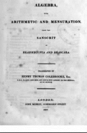
婆罗摩笈多和婆什迦罗的著作英译本
婆罗摩笈多对数学的最突出贡献是解不定方程，特别是解下列不定方程nx2＋1＝y2，其中n 是非平方正整数，虽然婆罗摩笈多是第一个研究此类方程的数学家，却被欧拉错误地命名为佩尔方程（Pell's equation，佩尔是17世纪的英国数学家）。婆罗摩笈多给出了佩尔方程的一种特殊解法，并命名为“瓦格布拉蒂”。在欧洲1767年，拉格朗日（J．L．Lagrange）运用连分数理论，给出了该问题的完全解答。事实上，婆罗摩笈多在公元628年便几乎完全解出了这种方程，只是当时不为欧洲人所知。其后，婆罗摩笈多的解法又被婆什迦罗（Bhaskara）改进。
公元8世纪时，婆罗摩笈多的著作被带到巴格达，在皇室的支持下译成阿拉伯文，对当时阿拉伯的天文学和数学产生了一定影响。印度的一些天文表被阿拉伯人称为辛德因德（Sindhind），从发音上推测它们很可能取自婆罗摩笈多的《婆罗摩修正体系》，这些天文表在阿拉伯世界享有极高的声誉。
婆罗摩笈多的几何工作
【定理1】若圆内接四边形的对角线相互垂直，则垂直于一边且过对角线交点的直线将平分对边。
如图，圆内接四边形ABCD 的对角线AC⊥BD，交点为M，EF⊥BC，且M 在EF 上，那么F 是AD 的中点。
【证明1】
如图，∵AC ⊥BD，ME ⊥BC，
∴∠CBD ＝∠CME，
∵∠CBD ＝∠CAD，∠CME ＝∠AMF，
∴∠CAD ＝∠AMF，
∴AF＝MF，
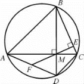
∵∠AMD＝90°，由直角三角形斜边中线定理逆定理可知，F是AD 中点。
【证明2】运用向量证明。
∵B、F、A 共线，由共线向量基本定理可知，存在唯一实数k，使
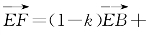
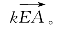
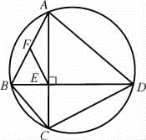
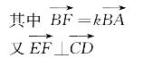
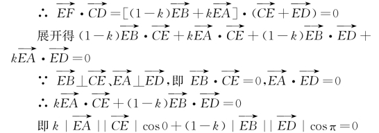
kEA·EC＝（1－k）EB·ED
∵EA·EC＝EB·ED（相交弦定理）
∴k＝1－k，k＝1/2
∴
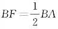
，即F 是BA 中点。婆罗摩笈多还推广了关于三角形面积的海伦公式，导出了圆内接四边形的面积公式。
【定理2】求圆内接四边形的面积。
【证明1】
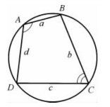
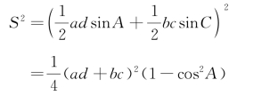
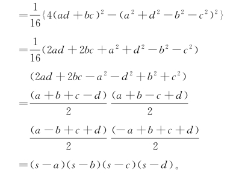
【证明2】
记△ABC 的面积为［ABC］，其余同。
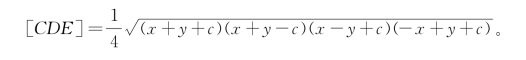
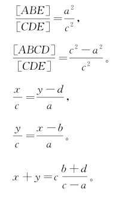
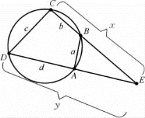
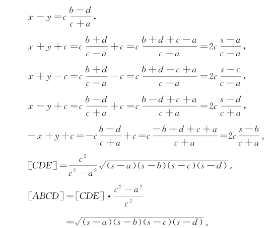
如果一个四边形既有外接圆，又有内切圆，称之为双心四边形。
【定理3】若双心四边形四边依次为a、b、c、d，则面积A 为
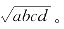
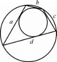
【证明】
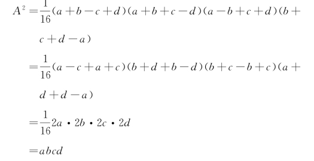
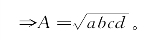
【例1】任意△ABC，以两边作正方形ACHG、ABIF，连GF，反向延长△ABC 垂线AD 交GF 于E，求证：E 为GF 中点。
【证明】连结BE，CE，
∵AD ⊥BC，
∴BE2－BA2＝CE2－CA2，
BE2＝AB2＋AE2－2AB·AE cos∠BAE，
CE2＝AC2＋AE2－2AC·AE cos∠CAE，
∴AC·AE·cos∠CAE ＝AB·AE·cos∠BAE，
∵AC＝AG，AB ＝AF，
∴AG·cos∠CAE ＝AF·cos∠BAE，
∵sin∠GAE ＝－cos∠CAE，sin∠FAE ＝－cos∠BAE，
∴AG·sin∠GAE ＝AF·sin∠FAE，
即［AEF］＝［AEG］，
即E 为FG 的中点。
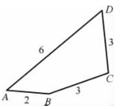
【例2】已知一个平面四边形的四条边长依次为2，3，3，6，求这样的四边形面积S 的最大值。
【解】由题意，四边形ABCD 的边长分别为AB＝2，BC＝3，CD＝3，DA＝6，连接BD，则由余弦定理可得BD2＝22＋62－2·2·6·cos A ＝32＋32－2·3·3·cos C，
故有
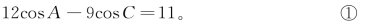
又因为
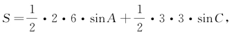
故有
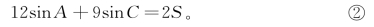
由①、②两边平方相加可得
4S2＋112＝122＋92－2·12·9·cos（A ＋C）≤122＋92＋2×12×9，
解得
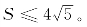
其中，当且仅当cos（A ＋C）＝－1，即四边形ABCD 对角互补（四边形是圆内接四边形）时，S 取最大值
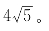
婆罗摩笈多面积公式更一般的形式
【例3】已知一个四边形的4条边长依次为a、b、c、d，求这样的四边形面积S 的最大值。
【解】设四边形ABCD 的面积为S，如图所示。
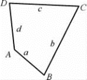
则
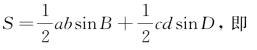
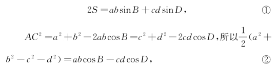
①、②两边平方相加有
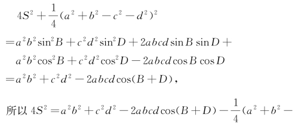
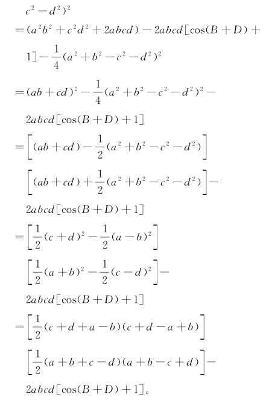
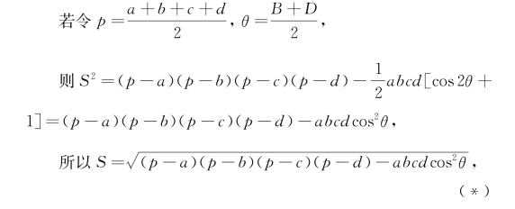
故若要使S 取得最大值，则
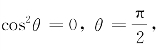
这时B ＋D ＝π。即四边形ABCD 为一圆内接四边形时，四边形的面积达到最大值，且
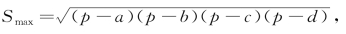
（其中
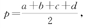
即四边形周长的一半）。结论（*）即为婆罗摩笈多面积公式的更一般形式，又称布雷特施奈德公式，是1842年德国数学家布雷特施奈德（Carl Anton Bretschneider，1808—1878）发现的。布雷特施奈德在几何、数论和数学史上做过一些工作。他也曾造对数积分和数学用表。他是第一个使用符号γ 表示欧拉常数的数学家。另外一个德国数学家施特雷尔克（F．Strehlke）也在同年发现了同样的公式。
动脑筋 想想看
1．（逆定理）若一凸四边形的对角线相互垂直，且一边中点与对角线交点的连线垂直于对边，则该四边形有外接圆。
2．如图，正方形ABCD，EFGA，CHIK 首尾相连，L 是EH中点，求证LB⊥GK。
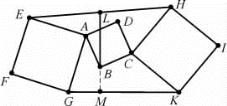
3．马哈维拉（Mahavira）定理：边为a、b、c、d 的圆内接四边形对角线长分别为
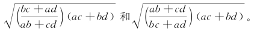
4．若四边形ABCD 为圆内接四边形，四边形的边长分别为a、b、c、d，求圆内接四边形的两对角线长度e、f 的夹角θ。
5．一四边形四边为相邻整数，证明其面积最大值不为整数。
6．四边形ABCD 内接于圆，作CE∥BD 交AB 的延长线于E，求证：AD·BE ＝BC·DC。
7．四边形ABCD 内接于圆，AB ＝25，BC ＝60，CD ＝52，DA ＝39，求圆直径的长度。
8．（1998年第39届国际数学奥林匹克试题）在凸四边形ABCD 中，两对角线AC 与BD 互相垂直，两对边AB 与DC 不平行。点P 为线段AB 及CD 的垂直平分线的交点，且P 在四边形ABCD 的内部。证明：ABCD 为圆内接四边形的充分必要条件是△ABP 与△CDP 的面积相等。
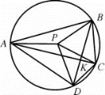